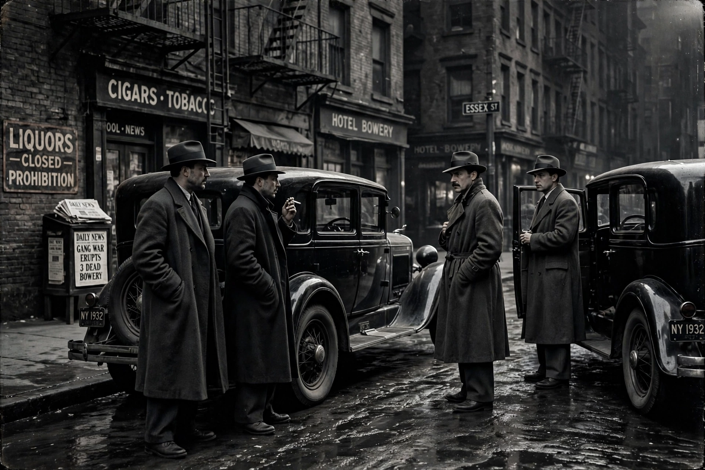

Castellammarese WarThe Castellammarese War was a bloody power struggle for control of the Italian-American Mafia between partisans of Joe Masseria and those of Salvatore Maranzano. It was named after Maranzano's Sicilian hometown of Castellammare del Golfo.
During Prohibition, bootlegging profits intensified rivalries among New York's Mafia families. Masseria, head of what became the Genovese family, sought dominance over Castellammarese immigrants led by Maranzano, who arrived from Sicily and resented Masseria's demands and his alliances with non-Sicilians.
Open warfare from 1929 included assassinations of figures such as Gaetano Reina. Maranzano's side gained ground through defections, notably Charles "Lucky" Luciano, who secretly negotiated with Maranzano. On 15 April 1931 Masseria was murdered at the Nuova Villa Tammaro restaurant in Coney Island after a meal with Luciano.
Maranzano declared himself capo di tutti capi (boss of all bosses) and reorganised New York into Five Families. His reign lasted months: on 10 September 1931 he was shot and stabbed in his Manhattan office by gunmen recruited by Luciano. Luciano then helped create the Commission, a governing body intended to prevent such wars.